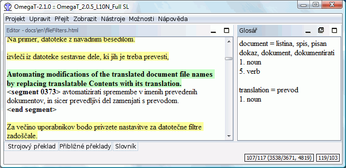

|
|
|
|
Pro změnu nastavení OmegaT a projektů slouží níže uvedená dialogová okna. Všechna jsou popsaná v samostatných odděleních, níže jen shrneme to, na co je lze použít a jak se dají zobrazit.
|
|
|
|
|
|
|
|
|
|
Hlavní okno se skládá ze tří podoken, hlavního menu a stavové lišty. Můžete měnit pozici jakéhokoliv podokna nebo dokonce jej odpojit a získat tak samostatné okno tím, že dané podokno potáhnete za jeho název. V závislosti na stavu podokna se mohou v horním pravém rohu podokna objevovat různé znaky:
 zmenší podokno tak, aby se zobrazoval jen jeho název ve spodní částí blízko stavové lišty.
zmenší podokno tak, aby se zobrazoval jen jeho název ve spodní částí blízko stavové lišty.
 způsobí, že podokno zabere všechen dostupný prostor okna.
způsobí, že podokno zabere všechen dostupný prostor okna.
 vrátí podokno zpět tam, kde bylo před tím, než bylo minimalizované, nebo maximalizované.
vrátí podokno zpět tam, kde bylo před tím, než bylo minimalizované, nebo maximalizované.
 odpojí podokno od hlavního okna a zobrazí jej jako samostatné okno.
odpojí podokno od hlavního okna a zobrazí jej jako samostatné okno.
 vrátí podokno zpět do hlavního okna.
vrátí podokno zpět do hlavního okna.
Je také možné umístit podokna tak, že se budou překrývat. V tomto případě bude zobrazena záložka horní části podokna. Kliknutí na záložku přesune podokno do popředí. Oddělovače mezi podokny je možno táhnout a docílit tak změnu velikosti podoken.
Sem budete vpisovat a editovat zde překlad. Okno editoru zobrazuje text částečně přeloženého dokumentu, tzn. text, který je už přeložený je také jako přeložený zobrazen, a text, který ještě není přeložený se zobrazuje v původním jazyce. Zobrazený text je rozdělený do segmentů, a překladatel může přecházet dokumentem na kterýkoliv segment a editovat jej. Ve výše uvedeném příkladě jsou přeložené segmenty zvýrazněny žlutě, ale uživatel si může změnit zvýrazňování nastavit podle svých představ (vizte menu Zobrazit).
Vždy jeden ze segmentů představuje aktivní segment. Tento jeden aktivní segment je pak zobrazen ve dvou částech: horní část je v původním jazyce, tučným písmem a na zeleném pozadí, spodní část je pole editace, které je ohraničené dvěma značkami: levá značka je <segment nnnn> kde nnnn představuje číslo segmentu v daném projektu a pravá značka <konec segmentu> ukončující daný segment. Horní část se používá jako reference a přepisuje či upravuje se obsah editačního pole, které obsahuje vlastní překlad.
V závislosti na Nastavení editace může být editační pole pro nepřeložený segment prázdné, obsahovat zdrojový text nebo překladový řetězec nejpřibližnější k tomu, který právě překládáte. Jakmile přejdete na jiný segment, překlad bude ověřen a uložen. Pokud chcete, aby segment zůstal nepřeložený, jednoduše vyprázdněte editační pole odstraněním veškerého textu (vyberte vše stiskem Ctrl+A a smažte pomocí Del). OmegaT může zapamatovat překlad, pokud je tento identický se zdrojem. Toto je užitečné u dokumentů, které obsahují obchodní značky, názvy nebo jiné vlastní jména, nebo části ve třetím jazyce, které nevyžadují překlad.
Více podrobností najdete v části Editace překladu.

Okno shodných výrazů ukazuje nejvíce podobné segmenty z překladových pamětí, jednak z překladové paměti projektu vytvořeného během překládání vašeho projektu, za další i ze starších překladových pamětí, které importuje z vašich předchozích prací, nebo je můžete získat od vašeho klienta či překladatelské agentury.
Když se přesunete na následující segment, první přibližná shoda (ta s nejvyšší mírou shody) je automaticky vybraná. Můžete vybrat další stiskem Ctrl+2, 3, 4 nebo 5. Nicméně pokud není dostupný návrh č. 5, stiskem Ctrl+5 ničeho nedocílíte.
Pro použití vybraného shodného výrazu ve vašem překladu, stiskněte Ctrl+R pro nahrazení cílového pole nalezeným výrazem, nebo stiskněte Ctrl+I pro jeho vložení na pozici kurzoru.
Míra shody se přibližně vypočítá z počtu společných slov v nalezeném a původním segmentu, a dělením počtu slov v tom delším. Označený přibližný překlad bude zvýrazněn tučně, slova, která v překládaném segmentu chybí, budou zbarvena modře a slova sousedící s chybějícími částmi budou green. Ve výše uvedeném příkladě obsahuje zdrojový segment Information about Java & OmegaT.. Nejvyšší úroveň shody je 75%, protože 3 ze 4 slov se shoduje (znak & se ignoruje). Na řádku s procentuálním vyjádřením shody uvádí i zdrojový soubor TMX, ve kterém byl záznam nalezen. Pokud není zobrazen žádný název souboru, znamená to, že zdroj pochází z výchozí překladové paměti projektu. Osiřelé / nespárované segmenty (shoda č. 4) popisuje segmenty ve výchozí překladové paměti bez odpovídajícího zdrojového segmentu.
Podokno Slovník obsahuje překlad terminologie načtený ze souborů slovníku. Ukazuje překlad pojmů nalezených v aktuálním segmentu, ale ukazuje jej jen za účelem odkazu a neumožňuje vložit nebo nahradit pojem jeho překladem.

Zdrojový segment ve výše uvedeném příkladu byl “In most translation jobs it is considered important to have the translated document look similar to the original.” a dvě obsažená slova document a translation byla nalezena ve slovníku. OmegaT také podporuje víceslovné pojmy, ale jen na základní úrovni, tzn. že pokud jsou nalezena obě slova daného spojení v aktuálním segmentu, sousloví bude zobrazeno.
Samozřejmě, můžete používat Hlavní menu k přístupu ke všem funkcím programu OmegaT. Úplný popis všech menu a jejich položek se nachází v dodatku k Hlavnímu menu. Nejpoužívanější funkce jsou dostupné pomocí klávesových zkratek, takže když si na ně zvyknete, nebudete už dále potřebovat v průběhu překládání na menu přecházet.
Stavová lišta zobrazuje zprávy vztahující se k běhu práce ve spodní části hlavního okna. Tato lišta podává uživateli interaktivní zprávy o specifických operacích, které právě probíhají. Také zobrazuje počet přibližných překladů a nalezených položek ve slovníku pro aktuální segment.
Okno Soubory projektu zobrazuje seznam souborů projektu a udává ostatní informace o projektu. Zobrazuje se automaticky, když OmegaT načítá projekt. Zavřete ho stiskem esc, otevřete nebo vyvoláte do popředí zkratkou Ctrl+L.
Zobrazena bude následující informace.
seznam všech přeložitelných souborů v projektu. Toto jsou soubory nacházející se v adresáři zdrojových souborů, které OmegaT může zpracovávat. Kliknutí na jakýkoliv soubor jej otevře a překlad může začít
Soubor, který je zrovna dostupný v podokně Editoru je zvýrazněn modrým pozadím.
Počet segmentů v každém souboru se zobrazuje vedle názvu souboru.
Počet jedinečných segmentů v celém projektu.
Počet jedinečných segmentů, které jsou již přeloženy. Aktualizuje se při každém přeložení segmentu.
Sada Jedinečných segmentů se počítá ze souhrnu všech segmentů a odstraněním všech duplicitních segmentů i s rozlišnou velikostí písmen („Run“ a „run“ se považují za rozdílné).
Rozdíl mezi „Počtem segmentů“ a „Počtem jedinečných segmentů“ dostanete přibližný přehled o tom, kolik opakování máte v textu. Povšimněte si, že čísla poskytují jen orientační údaje, o tom, jak podstatná ta která opakování jsou: segmenty by mohly být poměrně dlouhé věty opakované několikrát (máte štěstí!) nebo jednoduchá klíčová slova zaplňující tabulku (nemáte až takové štěstí...) Soubor project_stats.txt umístěný v adresáři /omegat vašeho projektu obsahuje detailnější informace o segmentech podle souboru.
Je možné upravit počet segmentů / jedinečných segmentů úpravou pravidel segmentace. Pokud jste již započali práci na svém projektu, tomuto byste se ale měli za každou cenu vyhnout. Více informací najdete v části Pravidla segmentace.
Do projektu můžete přidat zdrojové soubory kliknutím na tlačítko „Importovat zdrojové soubory ...“. Zkopíruje vybrané soubory do adresáře /source a znovu načte projekt pro načtení nových souborů. Můžete přidat zdrojové soubory z internetových stránek, napsaných v MediaWiki, kliknutím na tlačítko „Import z Mediawiki“ a zadáním odpovídající URL.
Okno Hledat budete používat pro nalezení specifických segmentů v projektu. Současně může být otevřeno několik oken hledání. Pro otevření nového, použijte Ctrl+F v hlavním okně. Okno Hledat se skládá z textového pole pro zadávání hledaných řetězců nebo klíčových slov, zaškrtávacích polí a přepínacích tlačítek
Při hledání se prochází zdroj i překlad. Můžete také vyhledávat v jakémkoliv adresáři, ale nezapomínejte, že OmegaT může vyhledávat jen v takových souborech, které podporuje.
Hledání podporuje zástupné znaky * a ? ale i regulární výrazy.
Stisknutí tlačítka pro vyhledávání po zadání řetězce do vyhledávacího pole zobrazí všechny segmenty v projektu, které obsahují hledaný řetězec. Protože OmegaT zpracovává identické segmenty jako jednu entitu, zobrazuje se jen první jedinečný segment. Segmenty jsou zobrazované v takovém pořadí, v jakém se nacházejí v projektu. Přeložené segmenty se zobrazí s původním textem nahoře a přeloženým textem dole, nepřeložené segmenty se zobrazí jen s původním textem.
Pokud chcete segment zpracovávat v Editoru, stačí na něj kliknout. Potom se můžete vrátit zpět do okna Hledat a přejít na další nalezený segment, který můžete taktéž upravovat. Takovýto postup je užitečný zejména pro aktualizaci terminologie.
Okno Ověření tagů detekuje chyby ve formátování přeložených dokumentů a zobrazí je. Klávesovou zkratkou Ctrl+T otevřete okno Ověření tagů. Okno obsahuje tabulku o třech sloupcích s odkazy na segmenty a jejich textem zdroje a překladu:

Tagy jsou zvýrazněné tučným modrým písmem a lze snadno srovnat původní obsah s obsahem přeloženým. Klikněte na odkaz pro přejití na segment v Editoru. Pokud je to nutné, opravte chybu a stiskněte Ctrl+T pro návrat k oknu Ověření tagů a tak můžete opravit případné další chyby. V prvním a třetím případě v uvedeném příkladě jsou tagy spárovány chybně, a ve druhém případě chybí v otevíracím tagu znaménko <.
Chyby tagů vyvstávají z manipulace tagů během překladu, které opakují stejný pořádek a počet tagů, po vzoru původního segmentu. Některé změny tagů jsou nutné a neškodné, oproti tomu některé zapříčiní problémy při vytváření přeložených dokumentů. Tagy všeobecně představují nějaký druh formátování v původním textu. Zjednodušení formátování původního textu přispívá ve velké míře ke snížení počtu tagů.
Prohlížeč nápovědy (který zobrazuje tuto příručku) může být spuštěn stisknutím klávesy F1 nebo pomocí Nápověda → Uživatelská příručka ... v hlavním menu.
V okně uvidíte příručku a dvě tlačítka: Zpět a Obsah. Uživatelská příručka je HTML dokument s odkazy na různé kapitoly. Kliknutím na odkaz, stejně jak je to běžné ve webovém prohlížeči, zobrazí požadovanou stránku.
Uživatelská příručka se nachází v podadresáři docs v instalačním adresáři OmegaT, takže si můžete prohlížet například anglickou dokumentaci otevřením souboru docs/en/index.hmtl ve svém internetovém prohlížeči. Tímto způsobem budete moci zobrazovat i externí odkazy, protože vestavěný prohlížeč nápovědy externí internetové odkazy nepřijímá.
| Právní poznámky | Obsah | Tématický rejstřík |